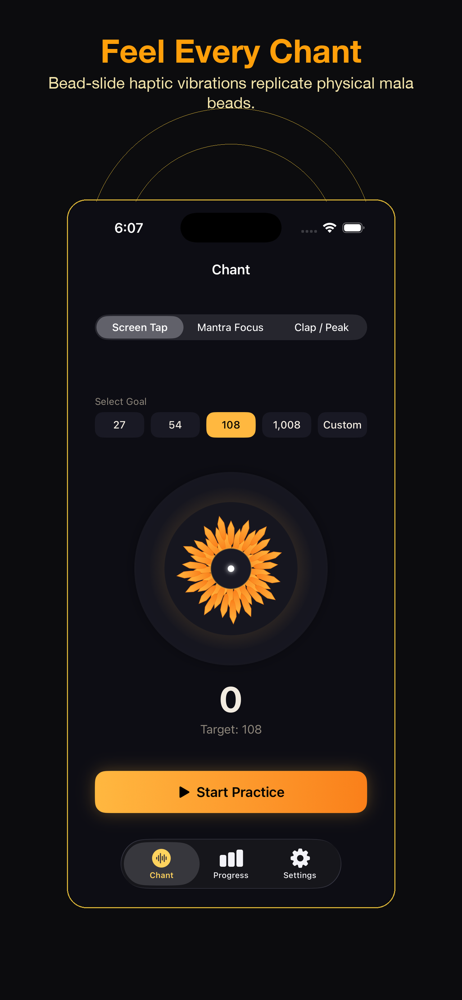
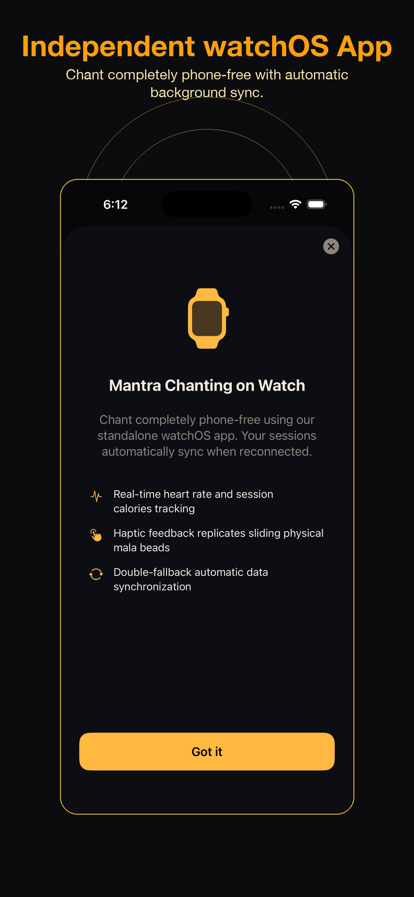
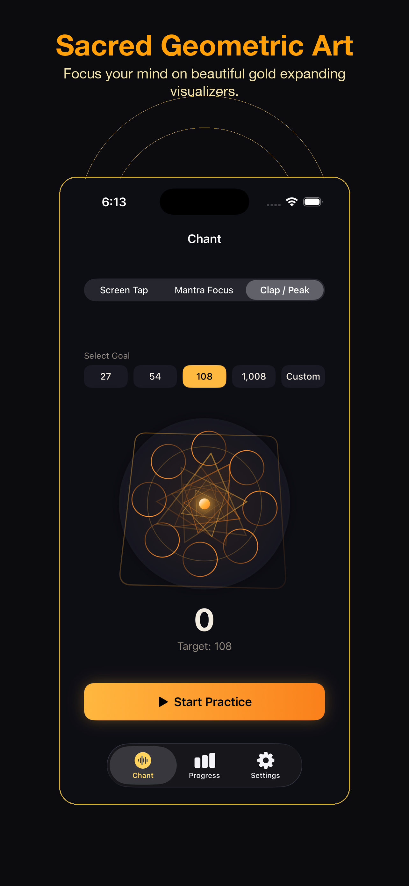
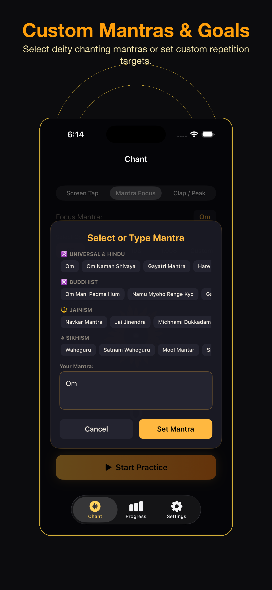
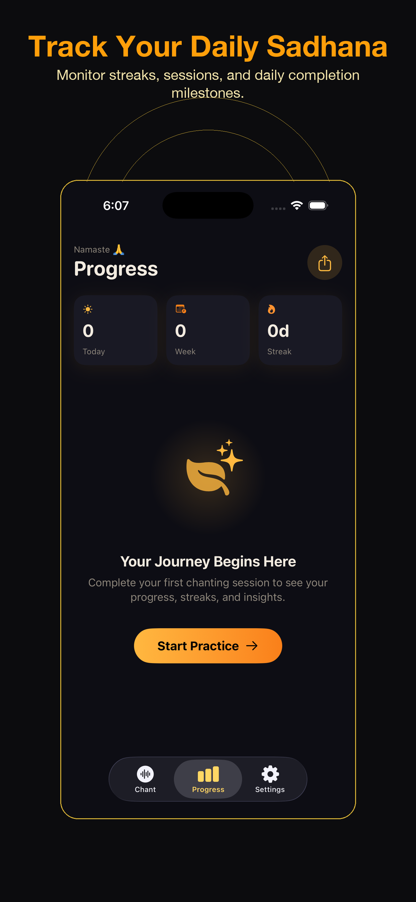
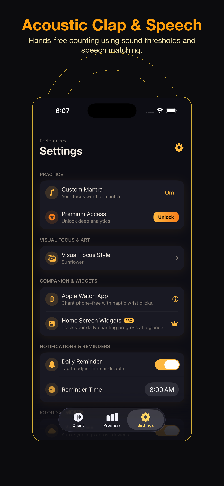
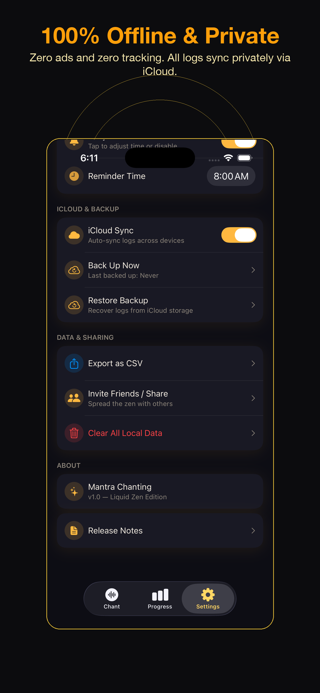
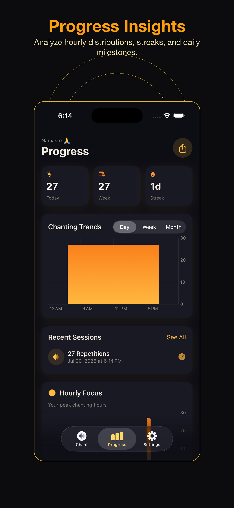

Version 1.0 Release Notes
Protect Your Focus. Count Your Chants. Deepen Your Practice.
The native iOS & watchOS Japa Mala prayer bead simulator app with bead-slide haptic feedback, voice trigger recognition, and standalone offline sync.
Mindful Features
Ditch the distractions. Keep perfect count of your spiritual repetitions without breaking focus.
Haptic Bead Simulator
Screen Tap mode sends wood-like bead sliding tactile clicks to replicate physical prayer strings on your wrist or phone.
Acoustic Chant Tracker
Includes Clap / Peak and speech recognition Mantra Focus modes to listen, verify, and increment counts hands-free on your iPhone.
Standalone Watch App
Offers phone-free count tracking via Wrist Motion (Shake) detection or automated pacing timers, syncing seamlessly back to your iPhone database.
App Preview & Screenshots
Take a visual tour of the premium interface, smooth transitions, and geometric meditation animations.
Main App Walkthrough
Tour all tabs, custom deity settings, and tracking modes.
Sacred Geometry Visualizer
Watch the expanding gold mandalas and ripple visualizers.








Standalone watchOS Companion
Leave your iPhone behind. Practice Zen meditation or Hindu Japa Sadhana with full independence right from your wrist.
Shake-to-Count
Uses the high-precision Apple Watch accelerometer to register counts automatically in response to your natural hand mudras and physical movements.
Auto-Counter Pacing
Features configurable pacing intervals that auto-accumulate counts at customized rates. Perfect for structured breathing meditation sessions.
Double-Fallback Sync
Counts sync automatically in real-time. If the counterpart app is out of range, updates queue into context storage, syncing the moment devices reconnect.
Designed for Meditation
Why Mantra Chanting: Japa Mala is the premium choice for spiritual practice.
| Capability | Mantra Chanting | Generic Counter Apps |
|---|---|---|
| Haptic Feedback Simulation | Replicates wooden beads | Standard buzz tap |
| Acoustic Voice Classification | Yes (hands-free) | No (touch-only) |
| 100% Ads & Tracker-Free | Guaranteed | Third-party ad analytics |
| watchOS Offline Database Sync | Dual-fallback sync | Requires iPhone connection |
Frequently Asked Questions
Does the app require active internet connection?
No. Mantra Chanting is designed to operate completely offline. Your logs are persisted locally and synced securely to your Apple iCloud container when a connection is available.
How do I enable tactile feedback milestones?
Tactile milestone alerts are active by default. You will receive a double haptic vibration on your wrist at every quarter interval of your target goal (such as 27, 54, and 81 clicks out of 108).